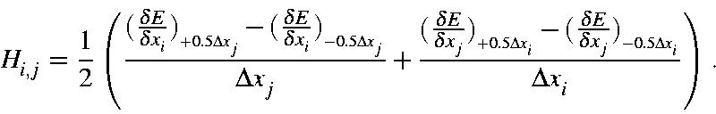

Back to Vibrational Relationships - Derivation
A hydrogen chloride molecule provides a good example of an asymmetric diatomic molecule. Hydrogen is very light, compared to a chlorine atom. Several different quantities will be used in this example, to assist in conversions, a set of conversion factors are useful.
The starting point will be the HCl molecule at its equilibrium distance, 1.3482 Ångstroms.
Data-set
The following dataset was used as the source for many of the numbers mentioned here. Keywords DFORCE, FMAT, LARGE, NOSYM, and NOREOR were used in order to provide expanded output, normally only FORCE would be used.
DFORCE MNDO FMAT LARGE NOSYM NOREOR Calculate the vibrational frequency of N2 H 0.00000000 +0 0.00000000 +0 0.00000000 +0 Cl 1.34816979 +1 0.00000000 +0 0.00000000 +0
Build the Hessian matrix
Hessian matrices for vibrational calculations are constructed using the gradients of the displaced Cartesian coordinates for each atom, and the following expression, for a description of how this is constructed, see Hessian matrix.

In this equation, Δxi = Δxj = 0.00833333 Å. This step-size was selected automatically, and similar step-size would work just as well. Only one matrix element, H(1,4), is important, this represents the N-N stretch along the "X" axis.
Four gradients are present in this equation, their values for Hessian element H(1,4) are:
| Gradient | Dist. H-Cl (Å) | Gradient (kcal mol-1 Å-1) | |
| 1 | (dE/dx1)@(+0.5Dx4) | 1.3523364 | -3.243954 |
| 2 | (dE/dx1)@(-0.5Dx4) | 1.3440031 | +3.125573 |
| 3 | (dE/dx4)@(+0.5Dx1) | 1.3440031 | -3.124478 |
| 4 | (dE/dx4)@(-0.5Dx1) | 1.3523364 | +3.245026 |
Ideally, gradients 1 and 4 should be the same, as should gradients 2 and 3, but because of numerical imprecision there are small differences. A 30% reduction in numerical imprecision can be achieved by averaging gradients 1 and 4, and 2 and 3.
Matrix element H(1,4) can then be calculated using these gradients, giving H(1,4) = -764.342 kcal x mol-1 x Å-2
Convert to SI
Converting the Hessian from (kcal mol-1 Å-2) to (millidynes Å-1) involves multiplying the Hessian by a factor. This factor can be expressed variously as:
| Factor | = (J m-1 to millidynes) (kcal to Joules)/((Å to m)(Mole to molecule)) |
| = (108)(4184)/((10-10)(6.022
x 1023)) = 6.9477 x 10-3 |
When this is done, the matrix element becomes H(1,4) = -764.342 x 6.9477 x 10-3 = -5.3105 millidynes x Å-1
Mass-weighting the Hessian
The final step in preparing the matrix for diagonalization involves mass-weighting. This operation is straightforward:
For all matrix elements:
| Hi,jm | = Hi,j x (Mi x Mj)-½ millidynes x Å-1 x amu-1 |
The atomic weight of hydrogen is 1.0079, and of chlorine: 35.453, so matrix element H(1,4) is:
| H1,4m | = -5.3105*(1.0079 x 35.453)-½ |
| = -0.88834 millidynes x Å-1 x amu-1 |
Convert the mass-weighted Hessian into normal modes of vibration
When the mass-weighted Hessian is diagonalized, the result is a set of eigenvalues, εi, and associate eigenvectors, ψi. The eigenvectors are the coefficients of the wave-function that represents the normal modes of vibration, and form an orthonormal set. The eigenvalues represent the force constants for the modes divided by the effective mass. Hydrogen chloride has only one non-trivial vibration, so:
| Eigenvalue ε1 of mass-weighted Hessian | |
| ε1 | = 5.4186 millidynes x Å-1 x amu-1 |
and the eigenvector: ψ1 is 0.9861 H(x) -0.1663 Cl(x). This represents the H - Cl stretch mode.
Recap of force constant and reduced mass
Eigenvalues, εi, of the mass-weighted Hessian are related to the force-constant, ki, and reduced mass, μi, for a normal mode of vibration by:
εi = ki/μi
Calculation of the Reduced Mass for the N-N stretch
Given the normal mode eigenvector, the reduced mass for the vibration can be calculated from:
μi = ΣA((ψi(A)(x))2 + (ψi(A)(y))2 + (ψi(A)(z))2)2 MA amu
where "A" refers to atom A, and "x", "y", and "z" refer to the respective Cartesian coordinate of atom "A".
For the vibration in N2, this sum is:
| μ1 | = ((0.9861)2)2 x 1.0079 + ((-0.1663)2)2 x 35.453 |
| = 0.9800 amu |
Calculation of the Force Constants for the N-N stretch
Given ε1 and μ1, the force constant, k1 is:
| k1 | = 5.4186 x 0.9800 millidynes x Å-1 x amu-1 x amu |
| = 5.3104 millidynes x Å-1 |
Convert eigenvalues to wavenumbers (frequencies) in reciprocal centimeters
The eigenvalues are then converted into vibrational frequencies, νi, in cm-1 via:
| νi | = 1/(2πc) x (N x 105 x εi)½ |
| = 1/(2 x 3.1416 x 2.9979 x 1010) x (6.022
x 1028 x 5.4186)½ = 1.3028 x 103 x εi½ |
|
| = 3032.6 cm-1 |
Here, "c" is in centimeters per second, N is in moles, and ε is in millidynes x Å-1 x amu-1
Convert wavenumbers to period of oscillation (T) in femtoseconds
The period for a molecular vibration is normally given in femtoseconds, fs; one femtosecond is 10-15 of a second. The conversion from wavenumber to period is given by:
| T | = 1015 /( c x ν) |
| = 1015 / (2.9979 x 1010 x 3032.6) | |
| = 11.0 fs |
Convert frequency into kcal/mol
| ν1 (kcal mol-1) | = ν1(cm-1) x N x h x c x (ergs per kcal)-1 |
| = 3032.6 x 6.022 x 1023 x 6.626 x 10-27 x 2.9979 x 1010 x (4.184 x 1010) -1 | |
| = 3032.6 x 2.859 x 10-3 | |
| = 8.670 kcal x mol-1 |
| ν1 | (erg)= (ν1(cm-1) x h x c x m) |
| = 3032.6 x 6.626 x 10-27 x 2.9979 x 1010 | |
| = 3032.6 x 1.9864 x 10-16 | |
| = 6.0240 x 10-13 erg | |
| = 6.0240 x 10-20 J |
Zero point energy
The zero-point energy of a polyatomic molecule is the sum of the zero-point energies of all its normal modes. The zero-point energy of a normal mode is half of its vibrational energy. For HCl, the vibration of 3032.6 cm-1, corresponds to an energy of 8.670 kcal mol-1, so its zero-point energy is 4.335 kcal mol-1.
Travel
In a molecular vibration the system starts at the energy minimum, then each atom moves along a path defined by the normal mode eigenvector. The distance each atom travels up each atom The distance travelled
| ν1 | = ½ k Δx12 |
| Δx1 | = (2ν1/k1)½ |
| = (2 x 6.0240 x 10-13 x (5.3104 x 105)-1)½ | |
| = (2.2688 x 10-18)½ | |
| = 1.506 x 10-9 cm | |
| = 0.1506 Å | |
HCl (compressed) = 1.2112
HCl (stretched) = 1.5170
Change: 0.3058
Convert frequency to velocity/p>
DRC (with dataset)
Compare DRC and simple harmonic motion